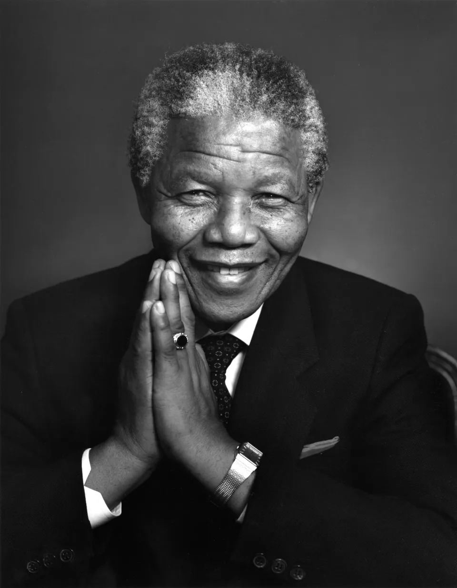

ini teks tebaldan miring
ini teks bergaris bawah dan dicoret
rumus air :H20 l kuadrat:x2
kode:document.getElemetById('id')
"pendidikan adalah senjata paling ampuh untuk mengubah dunia."- Nelson Mandela
click ini untuk mengetahui lebih lanjut tentang Nelson Mandela profil sayaHubungi Email ini jika ada kesalahan
ke Bagian 4bagian1
Nelson Rolihlahla Mandela (/mænˈdɛlə/;[1] 18 July 1918 – 5 December 2013) was a South African anti-apartheid revolutionary, politician, and philanthropist, who served as President of South Africa from 1994 to 1999. He was the country's first black head of state and the first elected in a fully representative democratic election. His government focused on dismantling the legacy of apartheid by tackling institutionalised racism and fostering racial reconciliation. Ideologically an African nationalist and socialist, he served as President of the African National Congress (ANC) party from 1991 to 1997.
bagian2
A Xhosa, Mandela was born in Mvezo to the Thembu royal family. He studied law at the University of Fort Hare and the University of the Witwatersrand before working as a lawyer in Johannesburg. There he became involved in anti-colonial and African nationalist politics, joining the ANC in 1943 and co-founding its Youth League in 1944. After the National Party's white-only government established apartheid—a system of racial segregation that privileged whites—he and the ANC committed themselves to its overthrow. Mandela was appointed President of the ANC's Transvaal branch, rising to prominence for his involvement in the 1952 Defiance Campaign and the 1955 Congress of the People. He was repeatedly arrested for seditious activities and was unsuccessfully prosecuted in the 1956 Treason Trial. Influenced by Marxism, he secretly joined the South African Communist Party (SACP). Although initially committed to non-violent protest, in association with the SACP he co-founded the militant Umkhonto we Sizwe in 1961 and led a sabotage campaign against the government. In 1962, he was arrested for conspiring to overthrow the state and sentenced to life imprisonment in the Rivonia Trial.
bagian 3
Mandela served 27 years in prison, initially on Robben Island, and later in Pollsmoor Prison and Victor Verster Prison. Amid growing domestic and international pressure, and with fears of a racial civil war, President F. W. de Klerk released him in 1990. Mandela and de Klerk negotiated an end to apartheid and organised the 1994 multiracial general election in which Mandela led the ANC to victory and became President. Leading a broad coalition government which promulgated a new constitution, Mandela emphasised reconciliation between the country's racial groups and created the Truth and Reconciliation Commission to investigate past human rights abuses. Economically, Mandela's administration retained its predecessor's liberal framework despite his own socialist beliefs, also introducing measures to encourage land reform, combat poverty, and expand healthcare services. Internationally, he acted as mediator in the Pan Am Flight 103 bombing trial and served as Secretary-General of the Non-Aligned Movement from 1998 to 1999. He declined a second presidential term and in 1999 was succeeded by his deputy, Thabo Mbeki. Mandela became an elder statesman and focused on combating poverty and HIV/AIDS through the charitable Nelson Mandela Foundation.
bagian4
Mandela was a controversial figure for much of his life. Although critics on the right denounced him as a communist terrorist and those on the radical left deemed him too eager to negotiate and reconcile with apartheid's supporters, he gained international acclaim for his activism. Widely regarded as an icon of democracy and social justice, he received more than 250 honours—including the Nobel Peace Prize—and became the subject of a cult of personality. He is held in deep respect within South Africa, where he is often referred to by his Xhosa clan name, Madiba, and described as the "Father of the Nation".